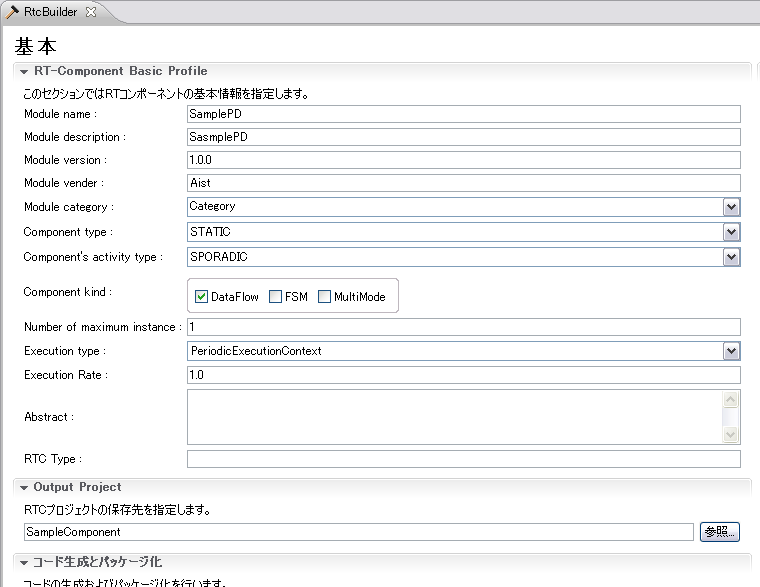
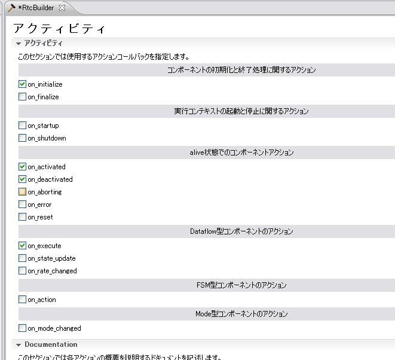
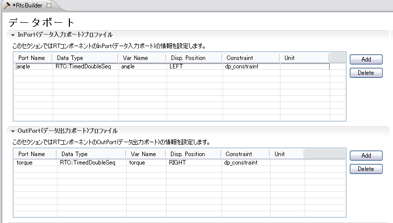
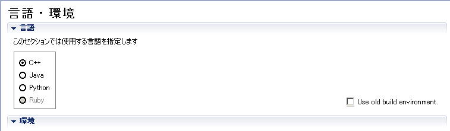

概要ここでは、歩行パターンファイルに基づいてPD制御でロボットを歩行させるコントローラをOpenRTMコンポーネントとして作成する方法を説明します。 ファイルの作成
まず、作業フォルダーとして新しいフォルダーを作成します。(例えば "mySamplePD" としましょう。)
※ テスト用のファイルが "OpenHRP3/sample/controller/SamplePD/etc/" フォルダー内に
置いてありますので、それらの３つのファイルを "mySamplePD/etc/" 内にコピーして使ってもらって
も構いません。
ファイル内容はいずれの場合も同じです。 歩行パターンファイル歩行パターンファイル(angle.dat,vel.dat)のフォーマットについて説明します。 時刻 <JointID=0 の関節のデータ> <JointID=1 の関節のデータ> … <JointID=nの関節のデータ>
一行が１フレームに相当し、デリミッタはtabです。時刻は開始時刻からの相対時間、関節のデータはangle.datの場合角度、vel.datの場合角速度に相当します。例えばサンプルの場合、14秒間6701フレームの29個の関節データが表現されています。 ゲインファイルPD制御のゲインを記録します。そのフォーマットはJointID行にPゲイン、Dゲインの任意個をスペースでわけて書くこととし、具体的には以下のとおりとします。Pゲイン Dゲイン (<= JointID = 0) Pゲイン Dゲイン (<= JointID = 1) ... Pゲイン Dゲイン (<= JointID = n) スケルトン作成コンポーネントのスケルトンを作成します。angleという名前のInPort、torqueという名前のOutPortを備えたSamplePDコンポーネントです。 RTC Builderを使用する方法とrtc-templateを使用する方法があります。 RTC BUilderを使用する
RTC Builderを起動します。RTC Builderに関する詳しい説明は、OpenRTM マニュアルの
RTCBuilder-1.1.0とは
で確認してください。
 アクティビティページを開いて図２のように設定します。
 データポートページを開いて図３のように設定します。

言語・環境ページを開いて図４のように設定します。
 基本プロファイル入力ページに戻って、コード生成ボタンを押すと、コンポーネントのスケルトンが作成されます。 プログラミングSamplePD.h生成されたソースSamplePD.hを編集します。 コントローラが使用する種々のメンバを追加します。 private: int dummy; std::ifstream angle, vel; // 関節角度, 関節角速度 double *Pgain; // Pゲインの配列 double *Dgain; // Dゲインの配列 std::vector<double> qold; // ひとつ前の関節角度を保持 SamplePD.cpp最初にヘッダファイルのインクルードとマクロの定義を行います。
#include <iostream>
#define DOF (29) // 自由度
#define TIMESTEP 0.002 // シミュレーションのステップ
// 各種ファイル群
#define ANGLE_FILE "etc/angle.dat"
#define VEL_FILE "etc/vel.dat"
#define GAIN_FILE "etc/PDgain.dat"
namespace {
const bool CONTROLLER_BRIDGE_DEBUG = false;
}
SamplePD.hで宣言したメソッドを実装します。 SamplePD::SamplePDでコンストラクタを追加します。
SamplePD::SamplePD(RTC::Manager* manager)
: RTC::DataFlowComponentBase(manager),
// <rtc-template block="initializer">
m_angleIn("angle", m_angle),
m_torqueOut("torque", m_torque),
// </rtc-template>
dummy(0),
qold(DOF)
{
SamplePD::onInitialize()で歩行パターンファイルを開き、ゲインファイルからPDゲイン値を変数に取り込みます。
RTC::ReturnCode_t SamplePD::onInitialize()
{
// Registration: InPort/OutPort/Service
// <rtc-template block="registration">
// Set InPort buffers
addInPort("angle", m_angleIn);
// Set OutPort buffer
addOutPort("torque", m_torqueOut);
// Set service provider to Ports
// Set service consumers to Ports
// Set CORBA Service Ports
// </rtc-template>
// <rtc-template block="bind_config">
// Bind variables and configuration variable
Pgain = new double[DOF];
Dgain = new double[DOF];
// 関節角度ファイルを開く
angle.open(ANGLE_FILE);
if (!angle.is_open()){
std::cerr << ANGLE_FILE << " not found" << std::endl;
}
// 関節角速度ファイルを開く
vel.open(VEL_FILE);
if (!vel.is_open()){
std::cerr << VEL_FILE << " not found" << std::endl;
}
// ゲインファイルを開き配列に代入
std::ifstream gain;
gain.open(GAIN_FILE);
if (gain.is_open()){
for (int i=0; i<DOF; i++){
gain >> Pgain[i];
gain >> Dgain[i];
}
gain.close();
}else{
std::cerr << GAIN_FILE << " not found" << std::endl;
}
// トルク, 関節角度ポートの長さをロボットの自由度分確保
m_torque.data.length(DOF);
m_angle.data.length(DOF);
// </rtc-template>
return RTC::RTC_OK;
}
SamplePD::~SamplePDでファイルのクローズと配列の開放を行います。 if (angle.is_open()) angle.close(); if (vel.is_open()) vel.close(); delete [] Pgain; delete [] Dgain; RTC::ReturnCode_t SamplePD::onActivatedでは初期化処理を行います。
RTC::ReturnCode_t SamplePD::onActivated(RTC::UniqueId ec_id)
{
std::cout << "on Activated" << std::endl;
angle.seekg(0);
vel.seekg(0);
// 関節角度InPortの値をアップデート
if(m_angleIn.isNew()){
m_angleIn.read();
}
// １フレーム前の値を保持する
for(int i=0; i < DOF; ++i){
qold[i] = m_angle.data[i];
}
return RTC::RTC_OK;
}
RTC::ReturnCode_t SamplePD::onExecuteメソッドを編集します。このメソッドがシミュレーションのステップごとに呼ばれ、指令を更新します。
RTC::ReturnCode_t SamplePD::onExecute(RTC::UniqueId ec_id)
{
if( CONTROLLER_BRIDGE_DEBUG )
{
std::cout << "onExecute" << std::endl;
}
// 関節角度InPortの値をアップデート
if(m_angleIn.isNew()){
m_angleIn.read();
}
double q_ref, dq_ref;
angle >> q_ref; vel >> dq_ref;// skip time
// 各関節のtorque値を決定
for (int i=0; i<DOF; i++){
angle >> q_ref;
vel >> dq_ref;
double q = m_angle.data[i];
double dq = (q - qold[i]) / TIMESTEP;
qold[i] = q;
m_torque.data[i] = -(q - q_ref) * Pgain[i] - (dq - dq_ref) * Dgain[i];
}
//トルクを出力
m_torqueOut.write();
return RTC::RTC_OK;
}
コンパイルLinuxの場合Makefileが自動的に生成されます。そのMakefileを使用してコンパイルします。 make -f Makefile.SamplePD Windowsの場合
CMake用のCMakeList.txtが自動的に生成されます。 # check doxygen installed #find_package(Doxygen) #if(DOXYGEN_FOUND STREQUAL "NO") # message(FATAL_ERROR "Doxygen not found.") #endif()
CMakeのGUIを起動して、必要な内容を設定し、VC++のバージョンを選択してソリューションファイルを生成してください。 |